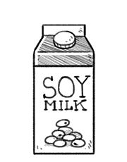

soy milk
Soy milk is a by-product of tofu, and an important source of protein, calcium, vitamin D and B12 for vegans.
Soy milk is made from soaking soy beans in water at a ratio of 10:1 (3h to overnight) and grinding them, boiling the mixture and filtering out the pulp. Traditionally soy milk has a beany taste and is more watery, modern varieties are creamier with a muted 'bean' taste to mimic dairy milk. Soy milk has its own by-products, like yuba (skin that forms when boiling soy milk) and okara (soy milk pulp).
soy beans
Soy beans are a species of legumes, widely grown for its edible bean. 1/2 cup of dried soybeans equals one serving of the 3-4 servings of protein required for good health. It is also a good source of Omega 3's (ALA).
Unfermented food uses of soy beans include soy milk and tofu, while fermented soy foods include soy sauce, miso, natto and tempeh. A staple in Eastern Asia, soybeans are used as a base for many vegan faux-meat dishes.
Store in a cool, dry place for up to 12 months.